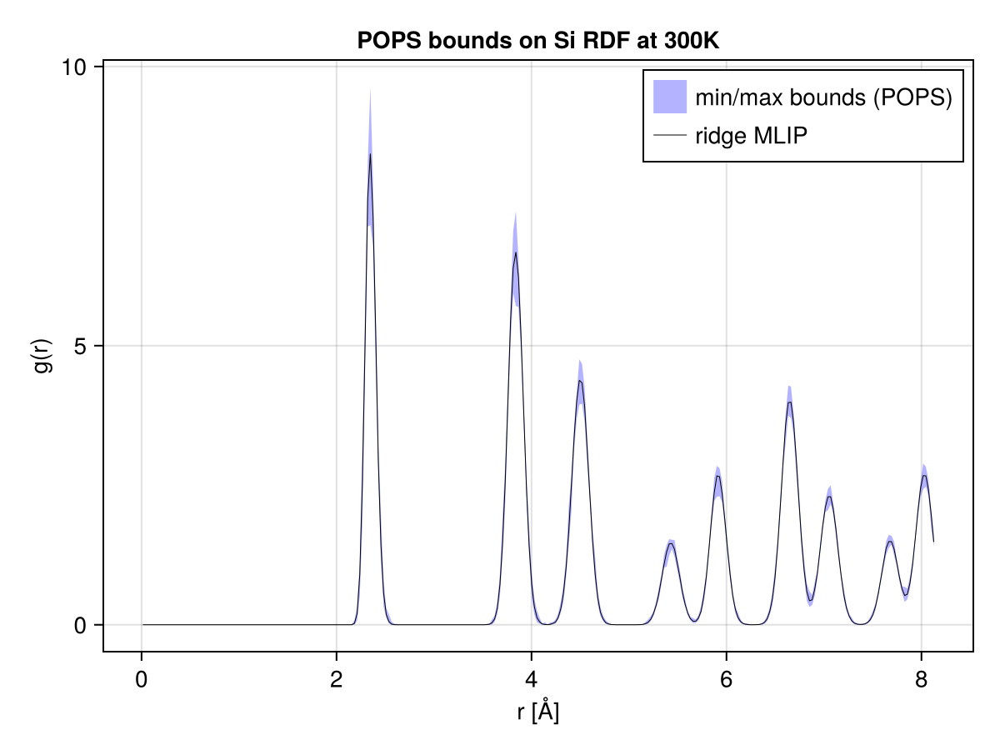

\theta_0,N```@meta CurrentModule = POPS
# Example: Molecular Dynamics
This example shows how to propagate model uncertainties from the ACE example to molecular dynamics trajectories. We use the same potential as the [ACE](ace.md) example.
A single trajectory of molecular dynamics is performed, using [Molly.jl](https://github.com/JuliaMolSim/Molly.jl) on a bulk silicon system under the *mean* potential (corresponding to the ridge regression parameter).
A reweighting procedure is then applied to estimates of a thermodynamic property — here the radial distribution function (RDF) — obtained from the trajectory. The reweighting procedure relies on the simple idea of importance sampling, or Boltzmann reweighting.
## Theory: Boltzmann reweighting
Suppose we have a trajectory of atomic configurations ``\{q_i\}_{i=1}^N`` obtained from MD sampling (or any Boltwmann sampling scheme, for that matter) of the potential energy surface defined by the ridge regression parameter ``\theta_0``. We estimate the expectation of any observable ``f(q)`` using the trajectory average
math \hat{f}{\theta0,N} = \frac{1}{N} \sum{i=1}^N f(qi) \xrightarrow{N \to \infty} \left(\int f(q) \mathrm{e}^{-\beta U(q;\theta0)} \mathrm{d}q\right) \bigg/ \left(\int \mathrm{e}^{-\beta U(q;\theta0)} \mathrm{d}q\right).
Now for $\theta\neq\theta_0$, using the identitymath \left(\int f(q) \mathrm{e}^{-\beta U(q;\theta)} \mathrm{d}q\right) \bigg/ \left(\int \mathrm{e}^{-\beta U(q;\theta)} \mathrm{d}q\right) = \left(\int f(q) \frac{\mathrm{e}^{-\beta U(q;\theta)}}{\mathrm{e}^{-\beta U(q;\theta0)}} \mathrm{e}^{-\beta U(q;\theta0)} \mathrm{d}q\right) \bigg/ \left(\int \frac{\mathrm{e}^{-\beta U(q;\theta)}}{\mathrm{e}^{-\beta U(q;\theta0)}} \mathrm{e}^{-\beta U(q;\theta0)} \mathrm{d}q\right),
we can reweight the trajectory samples to obtain an estimator of the Bolzmann average of $f$ under any potential defined by a parameter sample ``\theta``. More precisely, we compute
math \hat{f}{\theta0\to\theta,N} =\frac{\sum{i=1}^N wi f(qi)}{\sum{i=1}^N wi}, \quad \text{where } wi = \mathrm{e}^{-\beta (U(qi;\theta) - U(qi;\theta_0))}.
This allows to efficiently estimate the distribution of thermodynamic averages with respect to a given posterior distribution over model parameters, such as the POPS ensemble.
Here we propagate model uncertainties to estimates of the [radial distribution function](https://en.wikipedia.org/wiki/Radial_distribution_function) (RDF) ``g(r)`` of bulk silicon at 300 K.
After discretization of the RDF in bins of the variable ``r``, the Boltzmann reweighting procedure applies component-wise.
The full script is available in the repository under
[`examples/md/pops_rdf.jl`](https://github.com/noeblassel/POPS.jl/blob/main/examples/md/pops_rdf.jl).
## Fit a POPS ACE potential
The fit is identical in spirit to the [ACE example](ace.md): assemble the
preconditioned linear regression problem, then fit the POPS hypercube. We
keep the full `Si_tiny` dataset for fitting in this example.
julia using ACEpotentials, ACEfit using POPS using AtomsBuilder using Molly using Unitful using LinearAlgebra, Random, Statistics using CairoMakie using ProgressMeter
dataraw, _, _ = ACEpotentials.exampledataset("Si_tiny")
Eref = [:Si => -158.54496821] rcut = 4.0 model = ace1model(; elements=[:Si], order=3, totaldegree=10, rcut=rcut, Eref=Eref) nbasis = length(model.ps.WB) + length(model.ps.Wpair)
weights = Dict("default" => Dict("E" => 30.0, "F" => 1.0, "V" => 1.0)) datakw = (energykey="dftenergy", forcekey="dftforce", virialkey="dftvirial") data = [ACEpotentials.AtomsData(s; weights=weights, vref=model.model.Vref, datakw...) for s in dataraw]
A, Y, W = ACEfit.assemble(data, model) P = ACEpotentials.Models.algebraicsmoothnessprior(model.model; p=4) Ap = Diagonal(W) * (A / P) Yp = W .* Y
pops = fit(POPSModel, Ap, Yp; priorcovariance=1e-4, leveragepercentile=0.1)
θ0pre = vec(pops.coef) # coefficients in preconditioned basis θ0orig = P \ θ0pre # coefficients in native coordinates ACEpotentials.Models.setlinearparameters!(model, θ0orig)
## Molecular dynamics trajectory
We now run MD using the ridge potential. A 3×3×3 supercell of
diamond silicon is equilibrated for 2 ps, then sampled for 20 ps with the BAOA
Langevin integrator. For each frame we record both the pair-distance histogram
and the per-basis ACE energy features — the latter will let us reweight samples without
re-running MD.
julia T_md = 300.0u"K" sys0 = bulk(:Si, cubic=true) * (3, 3, 3) # 216 atoms rattle!(sys0, 0.03)
sysmd = Molly.System(sys0; forceunits=u"eV/Å", energyunits=u"eV") sysmd = Molly.System(sysmd; generalinters=(model,), velocities=Molly.randomvelocities(sysmd, T_md))
simulator = Langevin(dt=1.0u"fs", temperature=T_md, friction=1.0u"ps^-1")
Molly.simulate!(sysmd, simulator, 2000) # equilibration
function pair_histogram!(h, sys, edges) fill!(h, 0) coords, boundary = sys.coords, sys.boundary rmax, dx, nb, n = edges[end], step(edges), length(h), length(coords) @inbounds for i in 1:n-1, j in i+1:n r = norm(Molly.vector(coords[i], coords[j], boundary)) r ≥ rmax && continue b = clamp(Int(fld(ustrip(r), ustrip(dx))) + 1, 1, nb) h[b] += 1 end return h end
nframes, chunksteps, nbins = 200, 100, 300 rmax = 8.14u"Å" edges = range(0.0u"Å", rmax, length=nbins + 1)
acefeaturesbuf = zeros(nbasis, nframes) histosbuf = zeros(Int, nframes, nbins) hbuf = zeros(Int, n_bins)
@showprogress for i in 1:nframes Molly.simulate!(sysmd, simulator, chunksteps) Xi = ACEpotentials.Models.potentialenergybasis(sysmd, model) acefeaturesbuf[:, i] .= ustrip.(u"eV", Xi) pairhistogram!(hbuf, sysmd, edges) histosbuf[i, :] .= h_buf end
## Reweighting to the POPS posterior
For each posterior parameter sample ``\theta`` drawn from the POPS hypercube,
we compute the energy difference along the trajectory, and apply the Boltzmann weight to obtain samples of the
RDF that could have been obtained if the dynamics had been run with
``\theta`` instead of the ridge solution ``\theta_0``. The min/max envelope
across posterior samples gives a non-parametric uncertainty band.
julia function rdfnormalize(havg, edges, sys) N = length(sys.coords) Vbox = ustrip(u"Å^3", Molly.volume(sys)) e = ustrip.(u"Å", collect(edges)) npairsideal = N * (N - 1) / 2 g = similar(havg, Float64) for b in eachindex(havg) shell = (4 / 3) * π * (e[b+1]^3 - e[b]^3) g[b] = havg[b] / (npairs_ideal * shell / Vbox) end return g end
nsamples = 2000 Spre = sample(pops, nsamples; samplingmethod=:sobol) β = ustrip(u"eV^-1", 1 / (Unitful.k * T_md))
Hf = Float64.(histosbuf) gsamples = zeros(nsamples, nbins)
for s in 1:nsamples Δθorig = P \ (Spre[:, s] .- θ0pre) ΔU = acefeaturesbuf' * Δθ_orig
logw = -β .* ΔU
logw .-= maximum(logw) # numerical stability
w = exp.(logw)
Z = sum(w)
h_avg = vec((w' * Hf) ./ Z)
g_samples[s, :] .= rdf_normalize(h_avg, edges, sys_md)end
g0 = rdfnormalize(vec(mean(Hf; dims=1)), edges, sysmd) glo = vec(minimum(gsamples; dims=1)) ghi = vec(maximum(gsamples; dims=1))
## Plotting
julia r_centers = ustrip.(u"Å", 0.5 .* (edges[1:end-1] .+ edges[2:end]))
fig = Figure() ax = Axis(fig[1, 1]; xlabel="r [Å]", ylabel="g(r)", title="POPS bounds on Si RDF at 300K") band!(ax, rcenters, glo, ghi; color=(:blue, 0.3), label="min/max bounds (POPS)") lines!(ax, rcenters, g0; color=:black, label="ridge MLIP", linewidth=0.5) axislegend(ax; position=:rt) save(joinpath(@DIR, "rdf_pops.pdf"), fig) ```
Result

The black line corresponds to the RDF estimated from the ridge trajectory. The blue band corresponds to the min/max bounds obtained from the reweighted RDF ensemble.